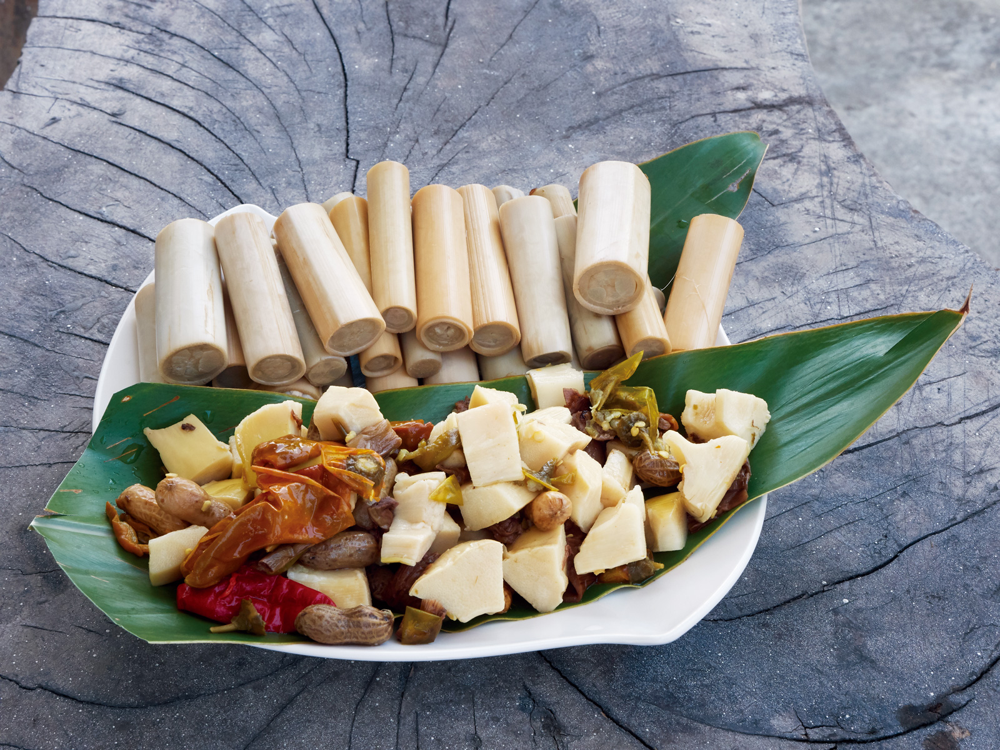
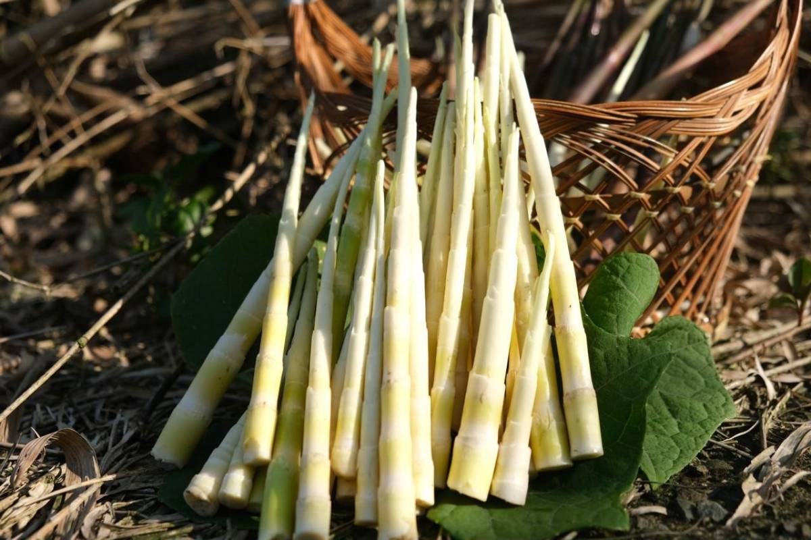
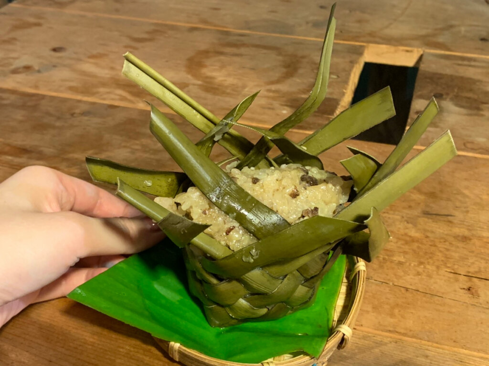
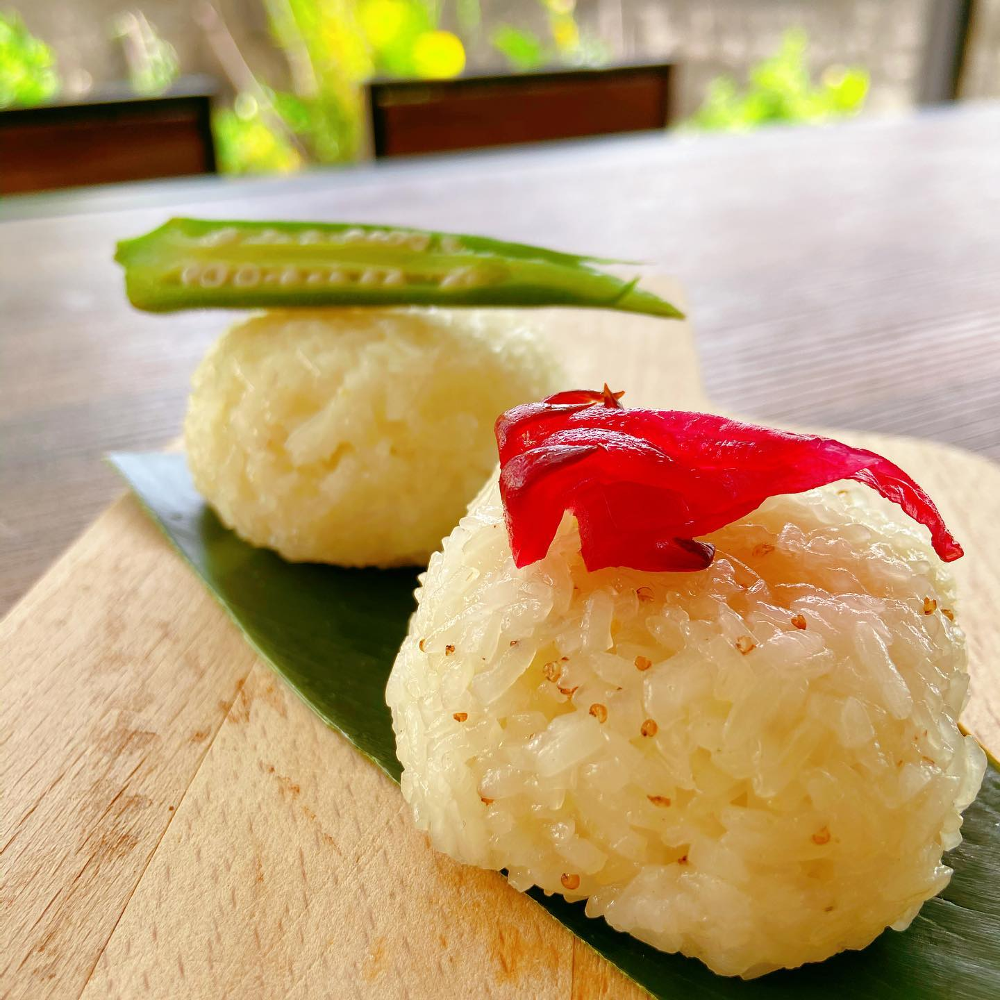

選擇飲食
-
情人的眼淚
lalupela'
雨來菇，是古時雨後在山坡、草皮上就能採到的野菜，阿美族傳說中曾有一對私奔戀人最後因無力逃跑，在草原上相擁而亡，而兩人滴下的眼淚就化為一朵朵的雨來菇，因此雨來菇又稱「情人的眼淚」。
-
金額一包/$70
-
鹹豬肉
siraw
喜烙是原住民非常具有代表性的傳統食材，幾乎是族人們從小吃到大，喜烙就是醃生豬肉，用粗鹽醃製，經過發酵後的豬肉風味獨特，酸酸鹹鹹的滋味，讓許多初次嘗試的朋友，都留下深刻的印象。
-
金額一罐/$300
-

藤心
dungec
阿美族人招待貴賓時，藤心是不可缺少的食物，部落耆老則喜歡將其煮湯，喝它的甘苦原味。阿美族部落流傳「吃藤心，壽命如藤條一般長」，顥示族人相信藤心對健康相當有助益。
-
金額一包/$120
-

劍筍
adeci
劍筍是台灣特有種，阿美族人傳統的吃法是和鹹豬肉或排骨一起熬湯，或是和鹹豬肉、辣椒一起炒，在以前會在還未剝外皮時將它拿去烤再淋上烤鹹豬肉的油也別有一番風味。
-
金額一包/$100
-

阿里鳳鳳
alibungbung
在阿美族的傳統社會中，妻子會準備給外出耕種的丈夫，因此也被稱為「情人粽」，做法是先將採集的葉子去除葉骨跟刺，編織成袋狀，再將糯米、鹹豬肉等內餡放入，經過蒸煮後就成為特別的愛心便當。
-
金額一份/$60
-

糯米飯
hakhak
「HakHak」 是阿美族的傳統料理 用糯米蒸煮後 佐配菜食用
一般部落配鹹魚乾、醃豬肉等 在慶典、婚喪喜慶才會吃得到
-
金額一份/$30
 ×
×
請輸入購買數量:
購買成功！